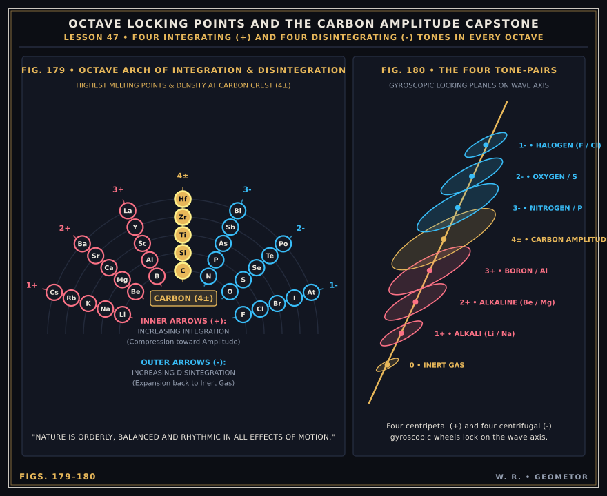
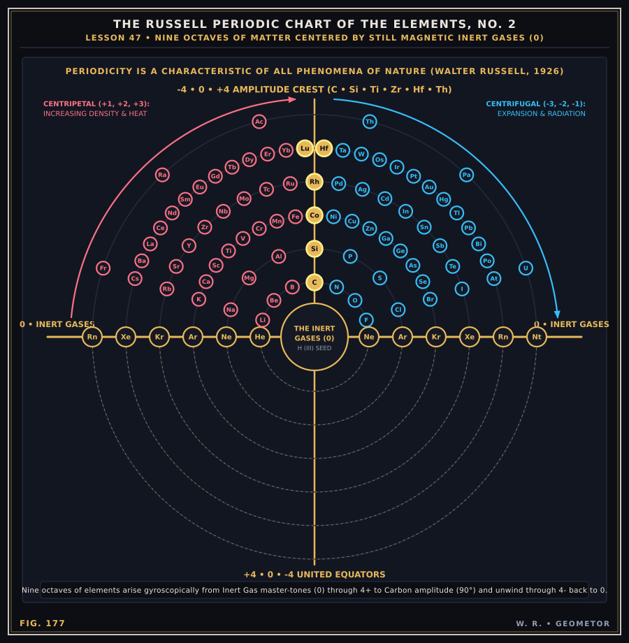

Chapter VI: The Making of Matter — The Nine-Octave Periodic Wave of the Elements¶
Unifying the 1926 Concentric Chart (Fig. 177) and the Corkscrew Octave Wave (Fig. 180) in 3D (Lesson 47)
In Lesson 47 (We Now Consider the Making of Matter), Russell applies the Cube-Sphere wave-field directly to chemistry and atomic structure, contrasting the traditional Mendeleev table (Fig. 175) with two seemingly distinct visual forms: his concentric Nine-Octave Periodic Chart, No. 2 (Fig. 177) and his lateral Gyroscopic Corkscrew Wave (Fig. 180).
In three dimensions, both diagrams are orthographic camera projections of a single 3D Nine-Octave Conical Helix:
Axial Projection (`Fig. 177`): Looking straight down the Still Magnetic $Z$ wave axis projects the 9 expanding conical turns onto concentric circles with Inert Gases (`0`) aligned along the horizontal zero equator ($Y = 0$) and Wave Amplitude Capstones (`4±` — Carbon, Silicon, Iron/Cobalt, Ruthenium/Rhodium, Tungsten/Osmium, Uranium) aligned along the vertical $90^\circ$ crest ($X = 0$).
Lateral Projection (`Figs. 179–180`): Rotating the camera $90^\circ$ sideways unfolds the flat concentric chart into the 9-Octave Conical Corkscrew Wave of integrating (+) and disintegrating (-) gyroscopic wheels!
Interactive 3D Nine-Octave Periodic Helix (Fig. 177 ↔ Fig. 180)¶
Click Axial Chart (`Fig. 177`), 3D Conical Vortex, and Lateral Wave (`Fig. 180`) below to watch Russell’s 1926 concentric periodic table unfold in real time into the 3D corkscrew wave, and hover over any element node across Octaves I–IX:
Parametric 3D Geometry Exports:
Wavefront OBJ (periodic_helix.obj)
·
Scene JSON (periodic_helix.json)


Plate VII (Figs. 179–180): The Octave Arch of Increasing Integration (+) and Disintegration (-) culminating in Carbon (4±), paired with the gyroscopic tone-wheels along the wave axis (Fig. 180).¶
The Russell Nine-Octave Periodic Chart (Fig. 177)¶


Plate VIII (Fig. 177): GEOMETOR vector reconstruction of The Russell Periodic Chart of the Elements, No. 2 (1926), corresponding to the axial camera projection of the 3D 9-octave helix above.¶